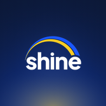

Shine Logout
Add it to your Home Screen in 3 taps.
- 1Tap Open
- 2Tap Share
- 3Add to Home Screen
On iOS 26, Share is in the ••• menu.
Open this page in Safari to add it to your Home Screen.

Add it to your Home Screen in 3 taps.
On iOS 26, Share is in the ••• menu.
Open this page in Safari to add it to your Home Screen.